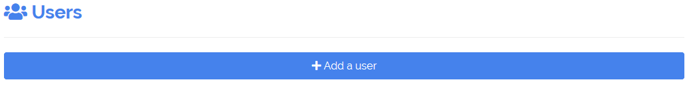

Introduction
Using SQL database protected (create_db()), an admin
mode is available to manage access to the application, features included
are
- manage users account : add, modify and delete users
- ask the user to change his password
- see logs about application usage
# Credentials data
credentials <- data.frame(
user = c("shiny", "shinymanager"),
password = c("azerty", "12345"),
# password will automatically be hashed
admin = c(FALSE, TRUE),
stringsAsFactors = FALSE
)
# you can use keyring package to set database key
library(keyring)
key_set("R-shinymanager-key", "obiwankenobi")
# Init the database
create_db(
credentials_data = credentials,
sqlite_path = "path/to/database.sqlite", # will be created
passphrase = key_get("R-shinymanager-key", "obiwankenobi")
# passphrase = "passphrase_wihtout_keyring"
)
# Wrap your UI with secure_app, enabled admin mode or not
ui <- secure_app(ui, enable_admin = TRUE)
server <- function(input, output, session) {
# check_credentials directly on sqlite db
res_auth <- secure_server(
check_credentials = check_credentials(
"path/to/database.sqlite",
passphrase = key_get("R-shinymanager-key", "obiwankenobi")
# passphrase = "passphrase_wihtout_keyring"
)
)
output$auth_output <- renderPrint({
reactiveValuesToList(res_auth)
})
# your classic server logic
...
}Starting page of the application will be :

Once logged, the application will be launched and a button added to navigate between the app and the admin panel (if user is authorized to access it), and to logout from the application :

Admin mode

Manage users
The first table lists all current users :

A user is defined (at least) by the following information :
- User : username
- Start & Expire : optional dates of validity. If missing, access is not restricted to a specific period
-
Admin : user as administrator ? (
TRUE/FALSE)
Add user

Using Add user button. So you can edit user information in the modal box :

Notes :
- User : Canno’t create existing user
- Start & Expire : Keep empty for no restriction
- Password : By defaut, a temporary password is generated. But you can put your own password and disable asking user to change it on first connexion.

Finally, the creation is effective clicking on validation button.
Edit current user
It’s possible to edit user information clicking on the blue
button on the table.
Password management
The second table allows password management :

- Change password button : Ask user to change password on next connexion
- Reset password button : If needed, a nex temporary password is generated. You have to give it to the user.
Moreover, by defaut, the module uses some security rules :
- at least 6 character
- one number, one uppercase, one lowercase
Additive information :
- Must change : The user have to change his password
- Have changed : The user already changed his password
- Date change : Password updated date